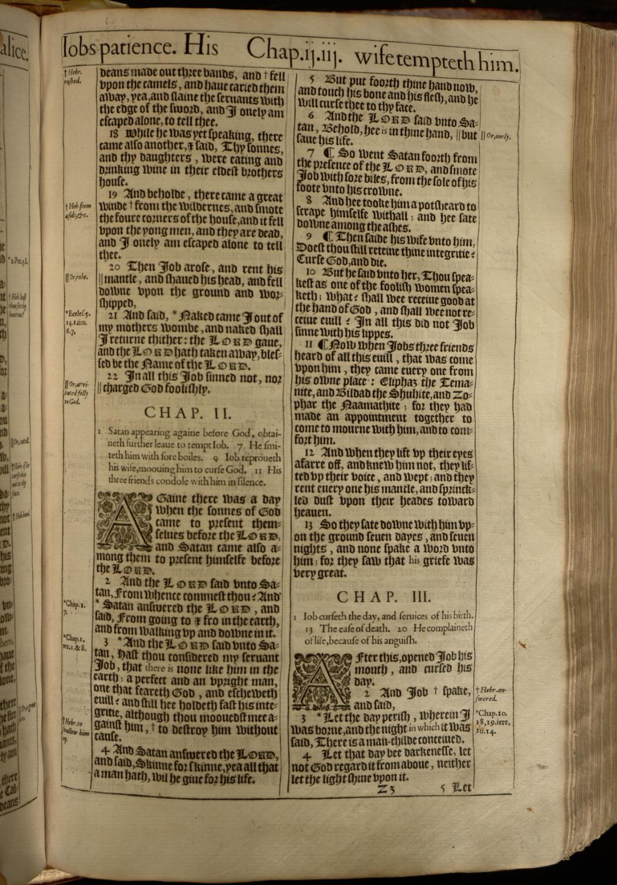
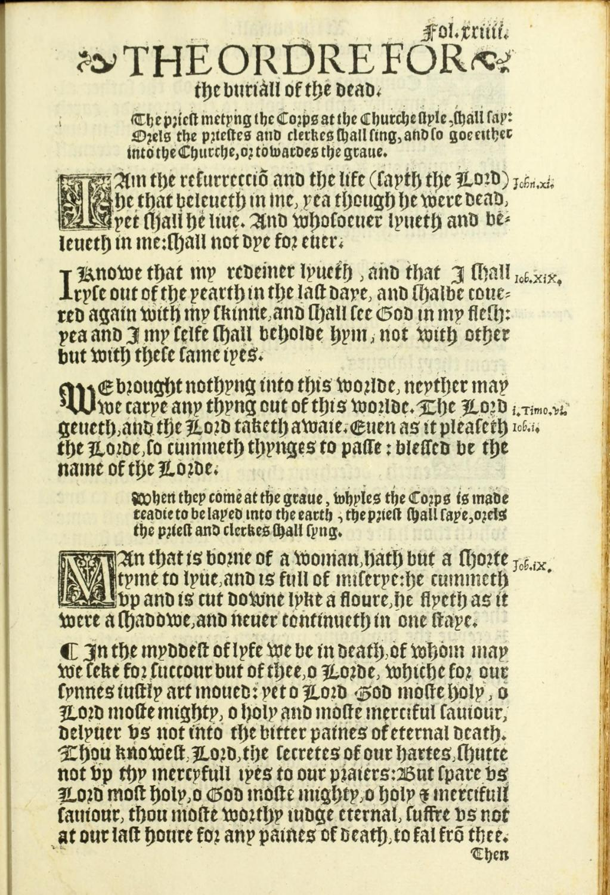
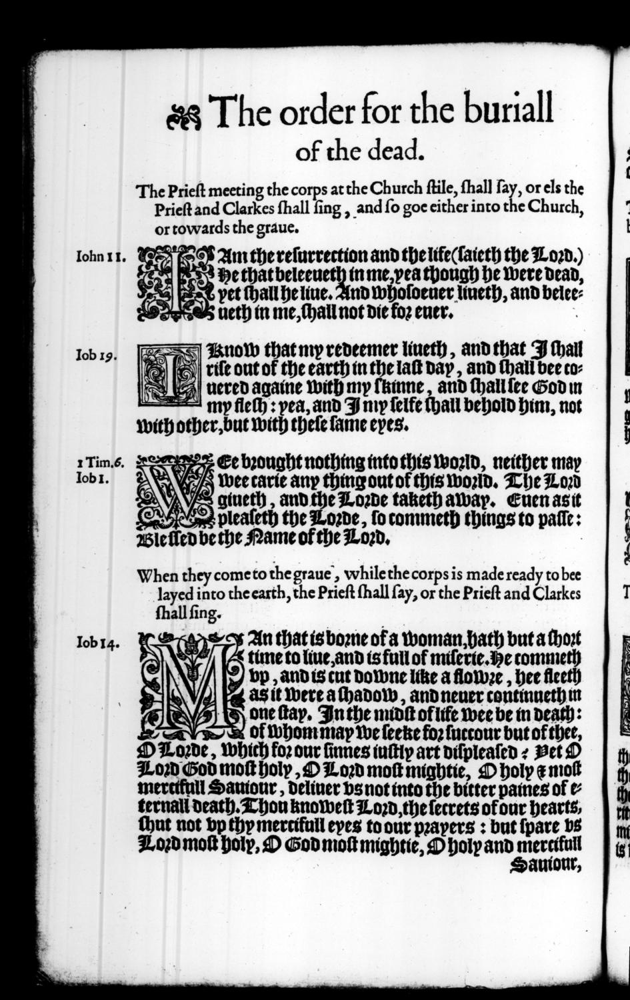
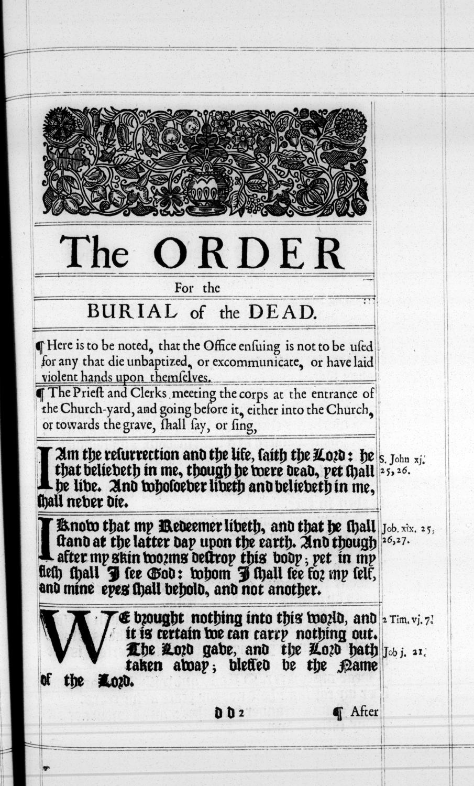
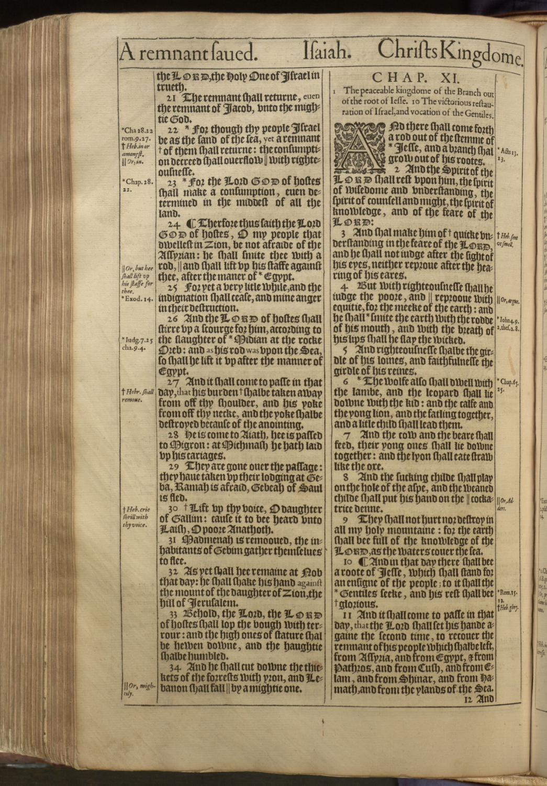
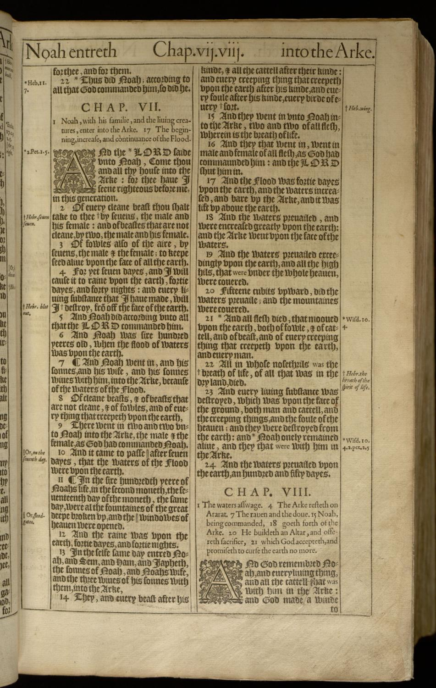

A Claim-by-Claim Response to “25 Theological Reasons To Consider Supernatural Bible Changes”
Liberty Through Truth Foundation
This edition updates the eschatological self-description. It no longer states that the author holds the little-season reading in the form given in 2.02. Under the same method applied in the companion essay, the little-season reading is quarantined at Tier 3, and the author’s amillennial reading, with the loosing future, is held at Tier 2. No argument in this document depended on the earlier position, and none has been weakened by the change. The scope correction in Part 1, that the deception targets the nations and not the archives, remains.
The graded case for this revision, with its method and corrections log, is set out in the companion essay, How I Learned to Read the End of the Age. At the time of this edition it is written but not yet published, and therefore carries no link.
Two questions are in play, and they are not the same question.
The first is theological: does Scripture teach, or permit the inference, that God is now supernaturally altering Bibles? This is a question about what the written word of God says about itself, and it is answered by reading the text in its context and asking what it claims.
The second is empirical: are Bibles demonstrably, physically, being altered? This is a question about the world, and it is answered by producing a thing (a manuscript, a printed page, a quotation, a photograph) and comparing it to another thing. It is answered with artifacts, or it is not answered at all.
The published document rests its theological case on the second question and never establishes it. The public argument now asserts it outright, claiming that a survey of pastors proves the Bible is changing. This response answers both, each in its own currency, and it refuses to let one stand in for the other. A theological answer does not settle an empirical claim, and a headcount does not settle a theological one.
25 Theological Reasons To Consider Supernatural Bible Changes (the 49-page theological brief circulating with that title). Hosted among the Educational Docs at alteredbible.com/educational-docs. The empirical claim now attached to that brief is the National Pastor Bible Quiz at alteredbible.com/survey, fielded 13 October–12 December 2025, with the presenter’s public assertion that the quiz proves the Bible is changing. This response answers the brief and the quiz. It does not answer the man.
“Prove all things; hold fast that which is good.”
1 Thessalonians 5:21, the standard applied here, and the claimant’s ownI once held the position under review. For a season I was not a skeptic of the supernatural-changes thesis but an advocate of it. I shared its content, recommended its teachers, and believed, genuinely and not as a debating posture, that a real thing had been uncovered about the times we are living in. I did not hold it lightly, and I did not hold it alone. The movement is not a fringe of three people in a basement. It has surveys, statements of faith, a podcast circuit, and an audience of sincere Christians who feel they have finally seen what the institutions are too compromised to say.
So this is not the work of someone who never felt the pull. It is the work of someone who felt it, followed it, and then had to walk it back.
What I walked back first, and precisely, is the claim that Scripture is being supernaturally altered. I withdrew it. The eschatology that traveled alongside it did not survive the same method. I no longer hold that we are presently in the little season. I hold an amillennial reading with a partial-preterist spine: the thousand years is the present church age, the binding was accomplished at the cross, the loosing lies ahead. The little season remains a real phase in the text’s own sequence; what I no longer do is place us inside it. The text marks no transition, and the season’s whole described content is a brief terminal war-deception of the nations that ends in fire (Revelation 20:3, 7–9). I also set aside an evidentiary layer that had leaned on timeline-revision and hidden history, on the idea that the millennial evidence lay in artifacts rather than in the text’s own stated terms. One correction from the earlier revision stands on its own terms: the deception is aimed at the allegiance of the nations, not at the church’s archives. It was never a charter for the corruption of Scripture, and treating it as one was my error, not the text’s. The graded case for this revision, with its method and its corrections log, is set out in the companion essay, How I Learned to Read the End of the Age.
Two readers are looking over my shoulder at all times. One is the person still inside the framework, who has every reason to suspect that any critique is written by someone who never understood, or who caved, or who is protecting an institution. To that reader: I understand the framework because I lived in it, and I am not writing from a place of safety at people who are lost. The other reader is the skeptic of the movement, who may be tempted to use this document as a cudgel and to enjoy the disproof a little too much. To that reader: the people inside the claim are not stupid and are not dishonest. They have learned, through hard experience, that the official story is not automatically the true story, and that instinct is not a spiritual defect. In many arenas it has been vindicated. The problem is not that they trusted too little. It is that a muscle trained against one kind of claim has been applied, without recalibration, to a different kind altogether.
It is not a defense of King James onlyism.
It is not a defense of a doctrine of verbal, plenary preservation.
It is not a defense of “theological necessity,” the argument that God would obviously not allow such a thing and therefore has not. The document is right to reject that argument, and this response rejects it too.
It is not a claim that the church’s traditions are innocent of proof-text abuse. On the contrary, one of the concessions below lands against a tradition this response otherwise shares.
It is not neutral. Its premises are stated early, so that the reader can audit the auditor. Fairness here means disclosed premises, not neutrality.
Three promises, made before the first claim is touched.
Every claim is stated in its strongest form before it is answered, in the document’s own words and with its own page numbers. Not the version that is easiest to knock down, but the version its author would recognize as his own. If the strongest form of a claim is not engaged, the refutation that follows is worthless.
Every place the document is right is granted first, plainly, on the record. This is not a courtesy. It is the only way a refutation has any force at all. A case that cannot concede is not a case; it is a temper.
The tests by which this response could itself be shown wrong are set out in advance, including what would change my mind. This is the promise the document does not make and cannot make. The document’s interpretive framework is built so that no evidence can count against it: if the text has changed, that confirms the thesis, and if the text has not, that only shows the change was subtle, or was providentially hidden, or was rewritten along with everything else. A position that explains in advance why every possible observation is consistent with it has stopped being a claim about the world. This response does the opposite. It names the one exhibit that would overturn it, and it says plainly that it would want to know.
There is one more rule, and it is about tone. The document, at its pressure points, raises its voice. It calls the opposing position laughable, it mocks the sentimental objection, it tells its critics to sit down and be quiet. That volume is noted here as a fact about the document, and it is not answered in kind. The strongest argument in this document is a dated leaf and a shelfmark. A sneer cannot compete with a page image, and it should not try. Let the record do the shouting.
He has nailed his theses to the door. Fair enough. Here is ours. We affirm that God preserves His word; that the apostles argued from its exact wording; that the covenant archive reports its own amendments in writing and preserves what it supersedes; and that no text in the canon predicts the silent alteration of Scripture. We affirm that the church is reformed by the recoverable text, and that this is what a reformation is. We will answer his survey, his proof-texts, and his eschatology, one claim at a time, on the record.
The felt analogy deserves a fair hearing, not a rebuke. From the claimant’s perspective this is a church-reforming act of reformation magnitude, and sincerity on that point is granted. But the analogy inverts its own precondition, and that is worth stating precisely.
Luther’s Ninety-Five Theses presuppose a stable, quotable text. They were argued from Scripture’s wording, and the Reformation’s slogan was ad fontes, back to the sources, because the sources are both authoritative and recoverable. Erasmus’s Greek New Testament and grammatical exegesis are the fuel of the Reformation. A reformation built on the claim that the text may have been silently edited, and that only memory can detect it, cannot quote the text to prove it. It denies the recoverability that made the Reformation possible. Luther’s movement produced a translation-and-scholarship enterprise, textual criticism in service of the church. This thesis renders that enterprise incoherent.
So the analogy is not arrogant. It is revealing. And the answer to it is not “here are my theses,” but “here is the text, and here is why it stands.”
Every claim in this dispute can be graded by how much the text actually supports it.
| Tier | What it means |
|---|---|
| Tier 1 | Explicit textual data: direct statements of the text. |
| Tier 2 | Strong inference from two or more independent converging lines of text. |
| Tier 3 | Hypothesis: coherent, text-compatible, unproven. |
| Tier 4 | Speculation: unanchored; discard. |
The preaching rule follows: doctrine may be preached at Tier 1 and Tier 2 only. Tier 3 may be held as hypothesis, labeled as such, and never taught as settled. Tier 4 is never taught. The document’s core conclusion, that all Bibles are supernaturally changing, never rises above Tier 3 anywhere in forty-nine pages, and it is preached as established. That gap between tier and tone is the first finding of this audit.
One directional rule governs how the tier is read, and it matches the companion essay: for a rejected view, the tier grades the strength of the case against it; for a live view, the tier grades the strength of the view’s own claim. A high tier on a rejection means the rejection is solid. A moderate tier on a live view means its distinctive claim is only a strong inference. The two are not the same kind of statement, and the ledger below uses them accordingly.
There is also a modal ladder: can, could, may, is, did. The recurring form of nearly all twenty-five claims is this: God is sovereign and has done analogous things (Tier 1, true), therefore God could permit text alteration (Tier 3, valid as possibility), therefore He is doing it, and refusal to affirm it is presumption. That last step does not follow. Possibility is not reportage. Permission requires a granted authority, a text, and none is produced.
No text in the canon asserts, predicts, or narrates the supernatural alteration of Scripture manuscripts. Searched across the Masoretic Text, the Septuagint, the Dead Sea Scrolls, and the breadth of the Ethiopian canon. We say “not located,” never “does not exist.”
Every text is first located by what it meant to its first audience, before any later system is allowed to speak. The document demands this rule of others, charging its opponents with reckless disregard for context, and then exempts itself. Its own treatment of “the time of the end” as probably right now performs zero audience-relevance work. That exemption sits at the engine of the case.
Two worked examples, tagged as framework readings and not as Tier 1 findings: “the end of the age” (sunteleia tou aionos) in Matthew 24:3 refers to the end of the Temple-covenant age, the AD 70 horizon, not world termination; and Daniel 12:7 defines “the time of the end” by its own words, “when he shall have accomplished to scatter the power of the holy people.” These are commitments, stated as such.
This is a finding, not a framework commitment, and it is the first load-bearing leg of the positive case. Christ’s own handling of the written Scriptures is the model the whole dispute turns on.
The New Testament then argues from Scripture’s exact wording. One jot or one tittle (Matthew 5:18). The tense of a verb decides an argument: “I AM the God of Abraham” (Matthew 22:31–32). The number of a noun: “seed,” not “seeds” (Galatians 3:16). “It is written” appears on the order of ninety times across the New Testament, by common count, as the final and unquestioned appeal.
The implication is the whole of it: apostolic argument presupposes a stable citation-text. If the text retroactively mutates, apostolic argumentation is unreconstructable, and the apostles’ own method dissolves. This is a finding, and the document never touches it.
One dominical saying carries no terminus and is used as such: Matthew 24:35, “Heaven and earth shall pass away, but my words shall not pass away.” We do not load Matthew 5:17–18 as a perpetual-preservation proof, because its own stated terminus (“till all be fulfilled”) is exactly the opening the document’s twenty-fifth reason needs. Matthew 5:18 remains a witness to verbal exactness in argument, not the document’s preservation clause.
The full range of “word” is granted. Davar as speech-event (Genesis 15:1). Logos as Person (John 1:1; Revelation 19:13). The active word (Hebrews 4:12). The word as multiplying influence (Acts 19:20). The document is right that careless conflation of “word” with “Bible” is rampant and has done real damage.
But the range also includes inscribed text. “Moses wrote all the words of the LORD” (Exodus 24:4). “Write this for a memorial in a book” (Exodus 17:14). “Note it in a book” (Isaiah 30:8). “the place where it was written” (Luke 4:17). “For the scripture saith unto Pharaoh” (Romans 9:17), God’s word to Pharaoh, recorded in Exodus, cited as “the scripture saith.” “How readest thou?” (Luke 10:26).
Range is not exclusion. The document proves, correctly, that “word” is not always “Bible,” then concludes it is never the preserved text, an exclusion the texts above forbid. The substitution test cuts both ways: you may not substitute “Bible” into John 1:1, and you may not substitute “vision” into Exodus 24:4. Symmetry is honesty. The document runs the test in one direction only.
This framework uses a multi-witness method with no default winner and no priority tier. Traditions are weighed per passage by evidence. The Masoretic Text is valued; the Septuagint is weighted where it preserves older readings; the Dead Sea Scrolls are decisive per case, not broadly; the Ethiopian canon is the breadth default only and is never a reading trump; the Peshitta is consulted for reading history. The supernatural-changes claim must survive all witnesses simultaneously, and no produced witness has ever touched even one.
The signature case is Deuteronomy 32:8. The Septuagint and the Qumran fragment 4QDeut-j read “sons of God” against the Masoretic “sons of Israel.” Note what this proves: real variants are documented, traceable, and distributed across text families and eras. Textual criticism is precisely the discipline that catches variation, which is exactly why it would catch retroactive cosmic editing.
A real variant has a distribution: some witnesses carry it and some do not, and quotations pattern by era and by family. A retroactive cosmic edit would have no distribution at all: it would appear nowhere in the physical record while the claimant’s memory insists it was there. Twenty-five centuries of manuscript evidence show ordinary copyist variation and nothing else. Memory-only discrepancies, with no physical witness and no lineage, are the signature of misremembering, not of alteration.
Proving the point from the other direction is the documented-variant catalogue in the appendices: real, famous, edition-level variants such as the 1611 “He/She” Bible (Ruth 3:15), the 1631 “Wicked Bible” (Exodus 20:14), the 1653 “Unrighteous Bible” (1 Corinthians 6:9), and the 1717 “Vinegar Bible” (Luke 20:9 heading). Every one has a date, a printer, a shelfmark, and a page image. That is what a documented textual change looks like. None of the twelve claimed changes has any of it.
One clarification the document blurs, and we do not: real textual variation, canonical extent, and alleged wording-edits are three different categories. Word-level variation is documentable and distributed (Deuteronomy 32:8). Canonical extent is a church-historical question about which books were received, not a change in the wording of any book. Alleged wording-edits are undocumentable, with no lineage and no distribution. Documented, distributed, traceable change with a written record is the opposite of retroactive silent editing. State this in Part 1 and again whenever a broader canon is introduced.
End-times language is sorted by its own content. Coming One is judicial and past, AD 70: “coming on the clouds” is the judgment idiom (Daniel 7:13; Isaiah 19:1), and “this generation” (Matthew 24:34) fixes the horizon. Coming Two is bodily and future: visible descent (Acts 1:11), the resurrection of all (1 Thessalonians 4:16–17; 1 Corinthians 15), final judgment, and the descent of the New Jerusalem (Revelation 21:2–3). The sorting rule: imminent language to Coming One, resurrection and new-creation language to Coming Two, ambiguous language flagged both ways honestly. We never drift to full preterism. The resurrection, the judgment, and the new heavens and earth stand. The companion essay expands this same seam into four movements, departure, session, judgment-coming, and final return, with the δέ of Matthew 24:36 as the hinge; the two renderings are one reading at two granularities, and the finer is treated there.
Every claim in Part 5 is measured against these.
| Code | Test | The question it asks |
|---|---|---|
| T1 | Textual Test | Does an inspired text say what the claim needs said, with the object actually identified? |
| T2 | Audience Test | What would the first hearers have understood this to mean? |
| T3 | Modal Test | Does the conclusion’s modality match the premise’s? Can a “can” premise produce an “is” conclusion without a “does” text? |
| T4 | Self-Application Test | Does the proposed epistemology survive the judgment-texts the proposal itself cites? |
| T5 | Dominical & Apostolic-Use Test | Does the claim cohere with how Christ and the apostles actually argued from Scripture? |
| T6 | Tradition Test | Does the claim account for the whole physical tradition, or only for the reader’s memory? |
| T7 | Gospel-Ground Test | Does the mechanism stop before it voids the promises the gospel still needs? |
The negative burden, stated plainly: we do not have to prove that God could never do this. We have to show three things. First, no text asserts it. Second, the document’s permission structure never reaches it. Third, the positive case stands, on the dominical and apostolic method and the transmission record. That is a complete refutation of a theological case. Nothing more is owed.
Throughout, findings and commitments are kept in separate registers. Findings, safe to argue as conclusions: the distribution test; the dominical and apostolic method; the nine failure modes; the internal incoherences; and the self-application collapse, which needs none of our canon, eschatology, or text-tradition premises. Commitments, stated as framework and never as Tier 1 findings: the multi-witness weighting; the partial-preterist reading of Daniel 12; the Ethiopian breadth default; the amillennial reading, held at Tier 2 as favored on least imposed tension, under which the little season is a future phase and not our present; and Enoch and Jubilees as authority. Transmission exhibits are illustration, not evidence.
The twenty-five claims do not need twenty-five separate refutations. They recycle nine structural failures. Naming them once lets the reader recognize the shape wherever it recurs, and it is what makes the case consistent and impossible to dodge claim by claim.
| Code | Name | In one sentence |
|---|---|---|
| F1 | Modal Collapse | “God can” becomes “God is,” without a text that says “God does.” |
| F2 | Jurisdiction Gap | Silence about where a promise lands is read as a promise that it lands nowhere. |
| F3 | Category Inversion | Having forbidden the conflation of “word” with “Bible,” the document conflates its own categories: silence with corruption, administration with document, access with alteration. |
| F4 | The Unstated Modifier | Later texts are played as trump cards that never name the object they are said to override. |
| F5 | Precedent Stretching | Real judgments, of silence, of affliction, of confusion, are reassigned to a category no text attests: the editing of covenant documents. |
| F6 | Audience Evacuation | Time-markers are stripped of their first-century referents and relocated to “probably right now.” |
| F7 | Self-Referential Collapse | The method trusts the very faculty the document’s own judgment-text calls deluded. |
| F8 | Burden Inversion | Absence of prohibition is treated as presence of promise, and the opponent is asked to prove a universal negative. |
| F9 | Sanction Inversion | A warning against tampering is read as a permission for it. |
F7 deserves its own treatment, because it is the one blow that requires none of our canon, our eschatology, or our text traditions. It needs only that the reader notice the document’s own inconsistency.
The document proposes memory plus community consensus as the detector of changes. Its own opening claim is that “we have hidden the unchanged word in our hearts prior to the changes.” Yet the document also cites 2 Thessalonians 2:9–11, in which God sends a strong delusion upon those who “received not the love of the truth,” as its permission-text for the deception era. The faculty the document trusts as its instrument is the exact faculty its own judgment-text names as deluded.
And the counsel of the prophet already knew the hazard: “The heart is deceitful above all things” (Jeremiah 17:9). That verse appears nowhere in forty-nine pages. A method that rules the heart reliable without ever hearing that warning has not yet been tested in kind.
There is a second self-collapse in the same vein. The document lists two locations for the preserved word: settled in heaven (Psalm 119:89) and hidden in the heart. If the only preserved location is heaven, then the heart-copy is either delivered from heaven by some verifiable means, or it is taken from the now-corrupted book, in which case it is corrupted too. The epistemology borrows what the theology denies.
Lead with F7 wherever the audience has not accepted our framework. It stands alone.
A refutation that cannot concede is a rant. This one leads with its concessions, and they are true, and several of them land against a tradition this response otherwise shares. A reader who sees the audit concede where it is weakest will trust it where it is strongest.
Granted in full. The semantic ranges are real: John 1:1, Revelation 19:13, Hebrews 4:12. The document is right that careless conflation is rampant and damaging. This is its strongest semantic point.
Granted. Natsab means stationed, settled, fixed, and it is not a paper-preservation formula. “Settled” is not “preserved” as an ink guarantee. The document’s parody of “Thy Bible, O Lord” is rhetorically fair against the King James only use of the verse.
Granted without reservation, and this is the flagship concession. In Psalm 12:7, “them” are the people of verses 1 and 5, the godly, the poor, the needy. The Hebrew suffixes (tishmerem, titsrennu) are masculine while “words” (imrot) is feminine, so “them” grammatically cannot be the words. The Septuagint reads “us,” and the Vulgate reads nos. The psalm promises that God will keep His people through a lying generation. It is not a promise about ink, and the tradition that pressed it into that service was wrong. The careful commentators agree with the document here, and we say so on the record, before the document reaches the point.
One bad proof-text by one school does not mean the absence of preservation ground elsewhere. Fair reading does not stop at Psalm 12. It goes on to the dominical and apostolic method (Part 2) and the transmission record. And the psalm’s own theology cuts for the standing text: God preserves the person through the generation while the wicked’s words vanish, and verse 6’s claim is that God’s speech is unalloyed, silver refined seven times. Pure words against vanishing words is the semantic ground for trusting transmitted testimony.
Granted in full, and it is the document’s best single point. The claim that God’s character obliges Him to preserve a particular text is not read off the text. It is read into it. When it is taught as though it were Scripture, the commandment of men is taught as doctrine (Matthew 15:9). Most certainty about preservation rests on this unexamined sentiment, and the document catches it.
Granted. No single text says “inspired, therefore preserved.” The rendering of 2 Timothy 3:16 as “every scripture inspired of God is also profitable” is a real critical-translation option, and the authorities cited for it are weighty.
Granted. There is a genuine difference between citing the Lord and giving faithful apostolic judgment within the same letter.
Granted. 1 Samuel 2:30, Jeremiah 18:7–10, Exodus 32:14, Jonah 3:10, 1 Kings 21:29. Tier 1. God does rescind and relent within covenant.
Granted. Job 1–2, Luke 22:31, 2 Corinthians 12:7, the Judges and captivity lists, Babel and Midian confusion, Amos 8:11, Micah 3:6–7, Psalm 74:9, Lamentations 2:9. All are Tier 1 descriptions of real judgments. The document’s catalog here is authentic, and it is a needed corrective to sentimental dualism.
Granted. Thousands of living languages have no Bible, and God gives nations over to blindness (Psalm 9:17; Romans 1; Amos 8:11). Withholding is not failing, and preservation and universal translation-access are different things.
Granted. The covenant sequence is a fair description, and Hebrews 8:8’s New Covenant does supersede the old administration. Tier 1.
Granted, when the later text identifies its object. Colossians 2:16–17 names the feasts, Mark 7:19 the foods, Acts 10:15 the creatures. The principle is real. The document’s application of it is the failure, handled at F4 and claim 23.
Granted, and it deserves a hearing. Treating a translation, an edition, or a mastery of the text as a substitute for living dependence is a genuine vice, and the Lord’s own rebuke of those who searched the Scriptures and missed Him stands over it still (John 5:39). The document’s warning has force. But a text that testifies of Him must be trustworthy to testify, and the remedy the document proposes installs a second, quieter idol in the vacancy, which we handle at claim 20 and in the consequences ledger.
These concessions defeat one school, the twentieth-century verbal-plenary-preservation and King James only textual tradition. Against that school the document largely succeeds, and we say so. The canonical, historical, apostolic case stands on entirely different legs, and the document never engages them. This is the difference between a fair audit and a school fight, and the reader must see it drawn.
Each entry follows a fixed format: the claim in its strongest form, the texts cited, what is granted, where it fails, what decides it, the tier, and the verdict. The document’s own numbering is followed, with one numbering slip noted once in the appendix.
Presented on its own, because the reader should watch the system eat itself without our help.
Fairness requires showing the fallout. The argument is not complete until the reader sees what the permission structure costs.
This part is the direct answer to the live claim that a survey of pastors proves the Bible is changing. Its tone is the gentlest in the document, because the audience includes people who are genuinely shaken. Vivid collective memory is real and worth explaining, and the explanation is well documented. Healing by clarity, not by fog. We do not mock the experience.
A memory survey can prove that memory differs. Only a text can prove that a text changed.
The instrument is a Google Forms questionnaire fielded in late 2025, with thirty-one form responses, thirty marked pastor, deacon, or minister, and most fill-in items answered by thirty respondents. It has thirty-four items: twelve yes or no familiarity questions and twenty-two three-option fill-ins. The 660 fill-in rows are thirty people times twenty-two items, which is repeated measures, not 660 independent persons. The outreach used purchased lists of pastor emails, which is infrastructure, not a probability sample and not a response rate. The correct label is an exploratory web questionnaire with an incompletely documented recruitment process.
The questionnaire is a recognition instrument. It presents a verse frame and three options, and the respondent selects. It examines no physical copy. Therefore, by its own construction, it cannot establish a textual change; it can only establish what a group of people recalled. We state this once, cleanly, without condescension. It is not a trick. It is the definition of what the instrument is.
On the flagship item, Job 1:21, the published options are “gave / hath taken away” (keyed, 3.3%), “giveth / taketh” (96.7%), and “hath given / shall take away” (approximately zero). The document’s own results page already says the remembered form has never existed in the King James Version. Two instruments circulate, the pastor form and a shorter international form, and they should not be pooled.
The claimant asks for a rational explanation of the unified misremembering. It exists, and it is testable, and it has four mechanisms.
Shared sources produce convergent error. Human memory is reconstructive and socially shaped. Unified misremembering is exactly what shared exposure predicts, not a mystery, and not a different thing from individual misremembering in kind, only in scale.
Version differences, not supernatural edits. The likely wrong answers correspond to wording in dominant modern versions and paraphrases, or to well-known quotations. Where the wrong answer matches a printed translation the respondent actually reads, the convergence is evidence of real, extant texts, not of a vanished original. This answers the exposure question directly: the respondent’s constant exposure is to the liturgical, idiomatic, and version forms they produce, not only to the page they read.
Proverbial, liturgical, and popular sources are documented, one correspondence per published wrong answer. The flagship is liturgy: the Job 1:21 couplet is the 1549 Book of Common Prayer burial office, and its 1604 witness still reads present-tense, while the 1611 lectern Job reads past and perfect, and the 1662 office conforms to the King James. Sister verses supply the rest: Luke 6:49’s sand and winds come from Matthew 7:26; Mark 5:27’s hem comes from Matthew 9:20; Luke 5:24’s bed and walk comes from John 5:8. Translation-stream items come from the modern versions: Genesis 3:19’s brow, John 1:41’s Messiah, John 12:24’s grain, Hebrews 6:1’s elementary principles. Reception items come from art and hymnody: Isaiah 11:6’s lion, which sits on the same page at verse 6c and verse 7 and is never paired with the lamb.
Method matters. The instrument is an exploratory questionnaire from a purchased list, the international form opens with attitude items, and neither is a probability sample. Third options include nonce strings such as “mat / dance,” “wild ox,” and “olive berry,” so equiprobable one-in-three was already invalid, and the printed strings make it indefensible. Clustering is real on the flagship items and is not a property of the whole instrument; several items are majority correct. And the asserted average-misremembering baseline is a misapplication: the classic false-event study reported six of twenty-four participants in one personalized study, and its authors explicitly disclaimed any prevalence estimate, offering only an existence proof.
The key discovery is that the convergence points to real, living texts, versions, paraphrases, and songs, the opposite of a vanished cosmic original. The data, explained, indicts the thesis.
Even granting every convergence, the leap to “physical Bibles changed” requires three things: that respondents originally memorized the now-lost text; that the present physical text differs from their memory; and that no version, paraphrase, or source explains it. The survey shows none of the three. It never compares physical documents, and it does not rule out sources. The decisive test remains Part 9: produce a physical or documentary witness of a change.
And the dominical frame is the answer to the causal claim itself. When Christ addressed error about Scripture, He named its cause: “Do ye not therefore err, because ye know not the scriptures, neither the power of God?” (Mark 12:24). The survey’s respondents answered from the forms they had absorbed. The dominical category is not knowing, not the text changing.
The reported figure of 421 of 660, with a probability near one in ten to the fifty-sixth, is arithmetically defensible under an independent one-third model. The error is not the arithmetic. It is treating 660 answers from thirty people as 660 independent, equiprobable trials, when the alternatives were not equally attractive, the items shared structure, and the respondents were self-selected. A very small probability under a false model does not make a supernatural model probable; it shows the model fits badly. The separate one-in-ten-to-the-nineteenth figure is not reproducible from the described model, because the instrument had three options, not ten. And the sample of thirty qualifying responses from a purchased-email wave does not support a national prevalence estimate.
He asks for an alternate explanation. It exists, and it is testable. Here it is. Now we ask him for what his claim actually requires: a before-and-after pair, one dated physical text or quotation whose reading has vanished from the whole tradition without distribution or lineage. That exhibit has never been produced. Until it is, the survey stands as a memory study, not a text study.
What this part does not do: it does not diagnose the claimant, it does not litigate tone, and it does not treat memory reports as nothing. It answers the instrument.
Falsifiability, stated in both directions and on the record.
All required, not any. The burden is his, stated in advance.
Produce one demonstrable retro-edit as described above: a single documented pre-change text, dated manuscript, quotation, or printed edition, whose reading has since vanished from every physical witness without distribution or lineage. Our position would then need revision, and we say so gladly. We are falsifiable. The document’s interpretive framework is structured to absorb disconfirmation, and its empirical claim verbally invites disconfirmation while rejecting the available explanations in advance. That asymmetry is itself the argument.
The ground of the reply in claim 25 is the structural shape of Revelation 20: duration (brief), object (the nations gathered for war), and named scope (deceive the nations, Revelation 20:3, 7–9). That ground holds under premillennial, amillennial, and postmillennial readings alike, so the entry rests on none of them in particular. The partial-preterist mapping of Daniel 12:7 to the AD 30 to 70 arc is a labeled commitment, not a finding, and no part of the reply depends on it. If that mapping were set aside entirely, the structural marks remain. They are stated first for that reason, and the mapping is stated as supporting only. And a watch item: if a critic argues that our broader canon is itself an admission of textual change, we answer with the three-category distinction in Part 2 and keep word-level variation, canonical extent, and alleged wording-edits separate.
Real variants have pedigrees: parent manuscripts, copy-lineages, and distribution patterns across families and eras. Retro-edits would have none. Memory-only discrepancies, with no physical witness anywhere, no lineage, and no distribution, are the signature of misremembering, not of alteration. The case does not need psychology to make this point; the physical record is decisive on its own.
And the honest limit, stated: we cannot prove a universal negative about the future. We prove that no text asserts present alteration, that the permission structure fails its own tests, and that the positive case stands. That is the whole task, and it is enough.
The document succeeds as a critique of overreach. Psalm 12:6–7, Psalm 119:89’s semantics, the word and Bible distinction, theological necessity as sentiment dressed as doctrine, and the verbal-plenary-preservation school. On these points it is right, most careful commentators agree with it, and this response says so first and plainly. The church’s proof-text discipline on preservation has often been lazy, and the document caught it.
The empirical premise is now asserted via the pastor survey, not established, and Part 8 answers that assertion. The engine is a modal collapse, one argument (God is sovereign, therefore anything is permissible) repeated with twenty-five sets of proof-texts. The mechanism is the unstated modifier, pairings that no text authorizes, voiding promises by reader-fiat, a mechanism with no stopping point before the gospel. The clock is audience-evacuated, “probably right now.” And the epistemology self-collapses: memory and consensus trusted at the exact point the document’s own judgment-texts warn they are deluded.
The refutation does not end in negation. These affirmations stand, and none of them depends on the concessions above.
“The grass withereth, the flower fadeth: but the word of our God shall stand for ever.”
Isaiah 40:8, and this is the word which by the gospel is preached unto you (1 Peter 1:25)The book that records its own revisions, survives its own judgments, and carries its critics’ verses intact across twenty centuries is not being edited. It is standing.
Multi-witness. No default winner. No priority tier. Weighed per passage by evidence.
Why this matters here: the supernatural-changes claim must survive all witnesses simultaneously, and it has never been tested against even one.
Supernatural Bible Changes (the movement under review) · Mandela Effect · Verbal-Plenary Preservation · theological necessity · providential preservation · law of first mention · modality (can, could, may, is, did) · Tier 1 to 4 · steelman · distribution (text-critical) · variant and copyist lineage · finding versus commitment · documented change versus retroactive edit · multi-witness · davar, logos, graphe, dath, natsab, paradosis · partial preterism · amillennialism (the thousand years as the present church age, the binding at the cross, the loosing future) · the Two Comings · little season (under the amillennial reading, a future brief war-deception of the nations, not our present era) · sunteleia · audience relevance.
The counter-exhibit. Every famous Bible misprint has a date, a printer, a shelfmark, and a page image, the pedigree the supernatural-changes claim never has.
| Variant | Reading | Witness |
|---|---|---|
| 1611 “He/She” | Ruth 3:15, “he went” in the first printing, “she went” in the later | Robert Barker, London, 1611; Queens’ College Old Library, R.1.1 |
| 1631 “Wicked” | Exodus 20:14, the “not” omitted | Barker and the assigns of John Bill, 1631; STC 2296; British Library C.24.a.41 |
| 1653 “Unrighteous” | 1 Corinthians 6:9, “shall inherit” for “shall not inherit” | John Field, London, 1653; ESTC R175288; Alexander Turnbull Library |
| 1717 “Vinegar” | Luke 20:9 heading, “Vinegar” for “Vineyard” | John Baskett, Oxford, 1717; Bridwell Library; Royal Collection Trust 1052106 |
These are copy-detectable differences within a printing or edition, and the church catalogued them all. The claim requires meaning-changing alterations with no distribution and no lineage across every tradition at once, which is not what a textual change looks like. Real change leaves fingerprints. The claimed change leaves none, and then treats the absence of fingerprints as the proof of the crime.
The flagship historical exhibit. Page images inspected.
| Witness | The clause | Form | Grade |
|---|---|---|---|
| 1549 BCP, Burial Office | “The Lord geueth, and the Lord taketh awaye” | present | IV |
| 1604 BCP, Burial Office | “The Lord giueth, and the Lorde taketh away” | present | T |
| 1611 KJV, Job 1:21 | “the LORD gaue, and the LORD hath taken away” | past / perfect | IV |
| 1662 BCP, Burial Office | “The Lord gaue, and the Lord hath taken away” | past / perfect | IV |
Grade IV denotes a reading inspected directly on the dated leaf. Grade T denotes transcription-verified against a dated record. The 1604 blackletter interior is near-indistinguishable from a 1552 or 1559 on a single leaf, so it is filed at T rather than IV.
The controlled conclusion: the present-tense formula is fixed in the inspected 1549 witness and by transcription in the 1604, and the past and perfect formula is fixed in the inspected 1662 witness and the 1611 lectern leaf. The transition occurred after the inspected 1604 witness and by the inspected 1662 witness. The evidence establishes a composite English liturgical sentence linked on the page to 1 Timothy 6 and Job 1, not a Hebrew variant, not a King James revision, and not the individual source of any respondent’s memory. It answers the “where did they all see the same wording” question with a documented pre-King-James liturgy, and it is exactly the pattern the memory model predicts.






The artifact that answers the survey’s method question. Each item is tagged by mechanism family, ritual and cultural salience, study frequency, delta type, and whether the wording is attested in a datable non-biblical source.
| Item | Remembered form | KJV form | Delta type | Datable source |
|---|---|---|---|---|
| Job 1:21 | giveth / taketh | gave / hath taken | Tense-shift, proverbial | BCP 1549 and 1662, image-verified |
| Luke 6:49 | sand / winds | earth / stream | Parallel substitution | Matthew 7:26 |
| Genesis 3:19 | sweat of thy brow | sweat of thy face | Idiomatic paraphrase | NIV; Lincoln (1847), Wayland (1837), on the KJV wording |
| Mark 5:27–28 | hem of his garment | garment / clothes | Parallel harmonization | Matthew 9:20; Luke 8:44; a manuscript variant at Mark 5:27 |
| Luke 5:24 | bed / walk | couch / go home | Parallel harmonization | John 5:8; Mark 2:11 |
| Genesis 7:9 | two by two | two and two | Idiomatic | NKJV; children’s material |
| Isaiah 11:6 | lion / lamb | wolf / lamb | Compression, symbol | Hicks paintings (1830s); Dorsey hymn (1937) |
| John 1:41 | Messiah | Messias | Translation update | Modern versions |
| Matthew 7:1 | lest | that ye be not judged | Idiomatic compression | Modern paraphrase |
| Hebrews 6:1 | elementary principles | principles of the doctrine | Translation update | NKJV, ESV |
| John 12:24 | grain | corn | Lexical modernization | Modern versions |
| Genesis 8:11 | olive branch | olive leaf | Cultural symbol | Douay-Rheims (1609); peace iconography |
Reading of the table: the deltas cluster on high-salience, low-study items and are mostly additive or idiomatic, not theologically tendentious. A text-change model predicts the opposite distribution, and it predicts the most drift on the most-read verses. The observed pattern is the memory model’s signature. And the kill shot, empirical and not theological: a large share of the broader “changed verses” in popular lists were never in the Bible at all, which is inexplicable under a text-change model, since you cannot remember a wording that was removed if it was never there, and trivial under a memory model, since a maxim delivered in a biblical register is simply filed as something holy one has heard many times. Tell him to run it on his own list. That is a frequency table, not philosophy.
Dominical texts on the written Scriptures (Tier 1 for what Christ does with the text, Tier 2 for the stability inference; none is a preservation promise): Matthew 26:54; Mark 12:24; Luke 24:27; John 10:35; compare Matthew 5:17–18 (stated terminus) and Matthew 24:35.
The document’s cited texts are steelmanned in place at each of the twenty-five claims and are not re-listed here.
Our counter-texts, Tier 1 core: Numbers 23:19; 1 Samuel 15:11, 29; Ezekiel 24:14; Malachi 3:6; Titus 1:2; Hebrews 6:17–18; Matthew 24:35; Isaiah 40:8; Psalm 89:34–37 with 38–39 and 52; Revelation 22:18–19 with Deuteronomy 4:2 and 12:32; Revelation 1:3; Exodus 24:4; 17:14; Jeremiah 30:2; Habakkuk 2:2; Luke 4:17; Romans 9:17; 10:17; 2 Thessalonians 2:15; 3:17; Jude 3; 1 Corinthians 15:3; 11:23; Galatians 6:11; 3:16; Matthew 22:31–32; Isaiah 8:20; Amos 3:7; Jeremiah 17:9; Deuteronomy 29:29; 8:3; 30:11–14; 31:26; 2 Timothy 1:13; 3:14–15; Jeremiah 36:32; 2 Kings 22; Daniel 9:2; Job 38–42 and 42:7; Genesis 22:8, 13–14; Hebrews 11:19; Isaiah 29:11–12; Daniel 8:11; Colossians 2:16–17; Mark 7:19; Acts 10:15; Jeremiah 32:14; Isaiah 54:9–10; 1 Corinthians 14:40.
Tier 2 and supporting: 1 Peter 1:23–25 (gospel in transmission); the Psalm 119 reader-verbs (Torah, not the closed canon); Daniel 12:7’s definition with the AD 70 mapping tagged as commitment; the Great Isaiah Scroll against the Masoretic text (substantially verbatim); 4QDeut-j for Deuteronomy 32:8; the Enoch correspondence (book-dependent, illustration only); the transmission record generally.